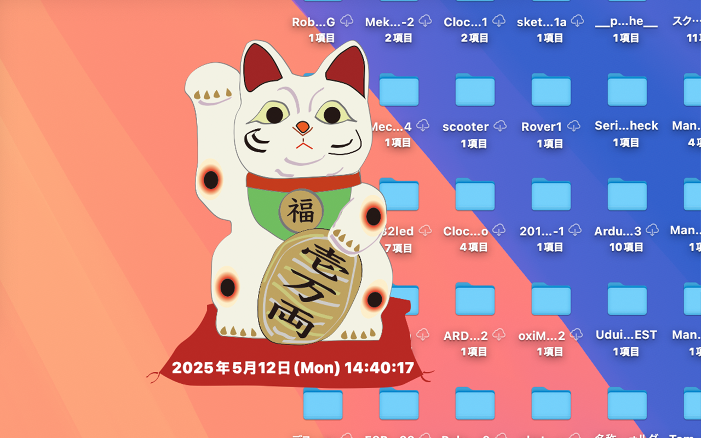
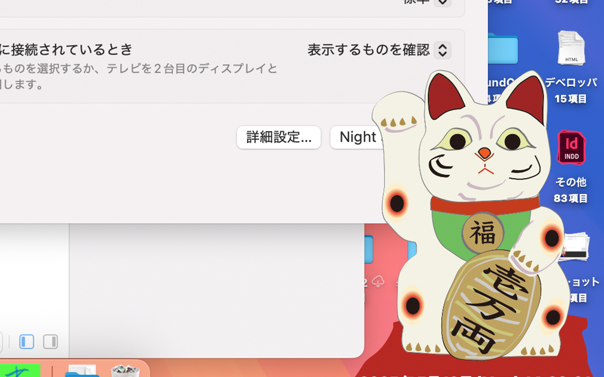

2025 年 05 月 09 日
ManekiTokei は招き猫の座布団部分に年月日と時計表示を行います。 Macintosh メニューバー標準時間表示では分迄しか表示されませんが、秒までの表示を可能にしました。起動すると最前で動きます。 Quit


招き猫は見ていて愛らしいものです。そんな招き猫を Macintosh デスクトップ上に置き時間と日付のチェックに使ってみてください。画像とボタン以外は全て透明にし、できるだけ他のアプリケーションプログラムのじゃまにならないようにデザインしました。
ManekiTokei のプライバシーポリシー
https://kuniyoshisugita.github.io/app-data/neko.html
お問い合わせ
📧 メールアドレス： kuniyoshisugita@gmail.com